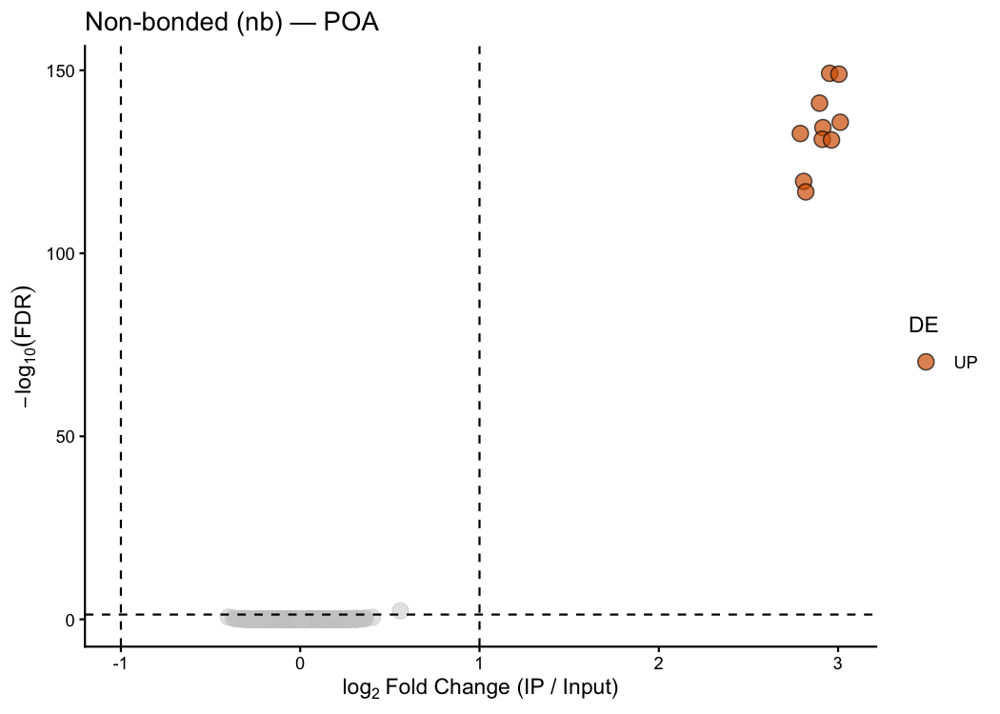
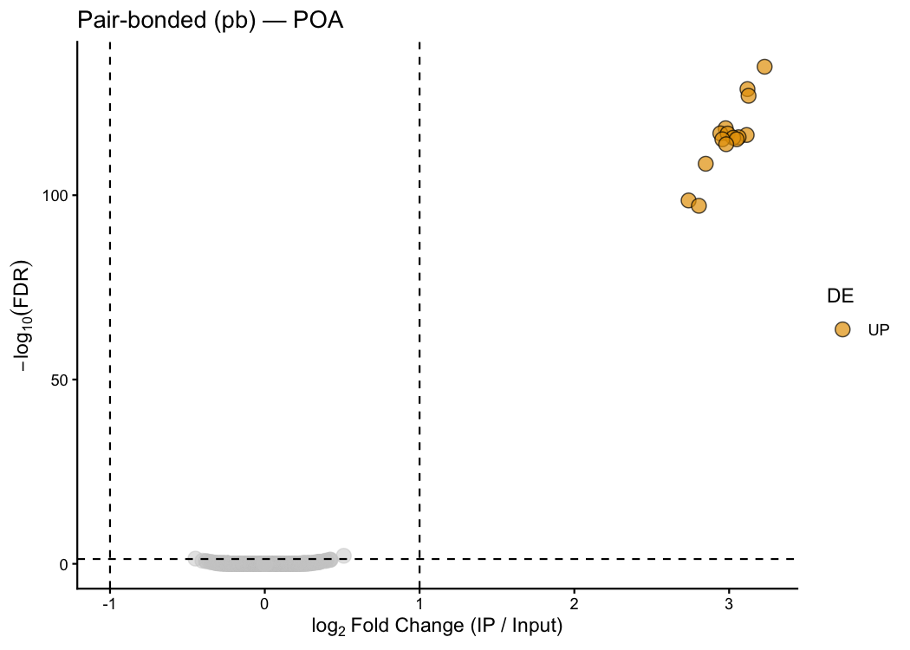
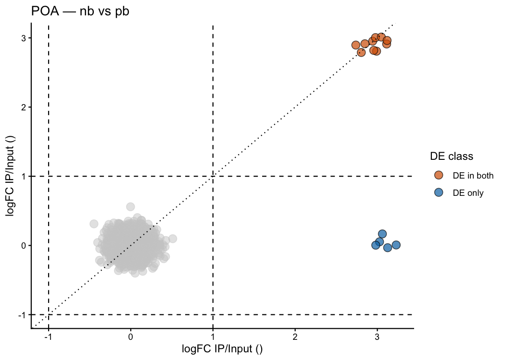
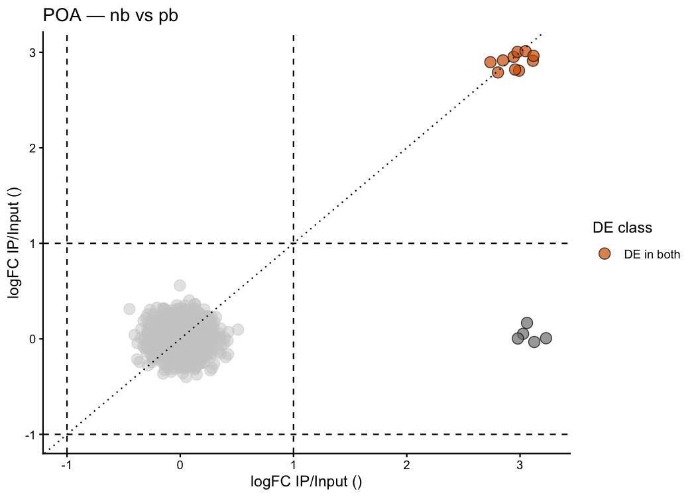
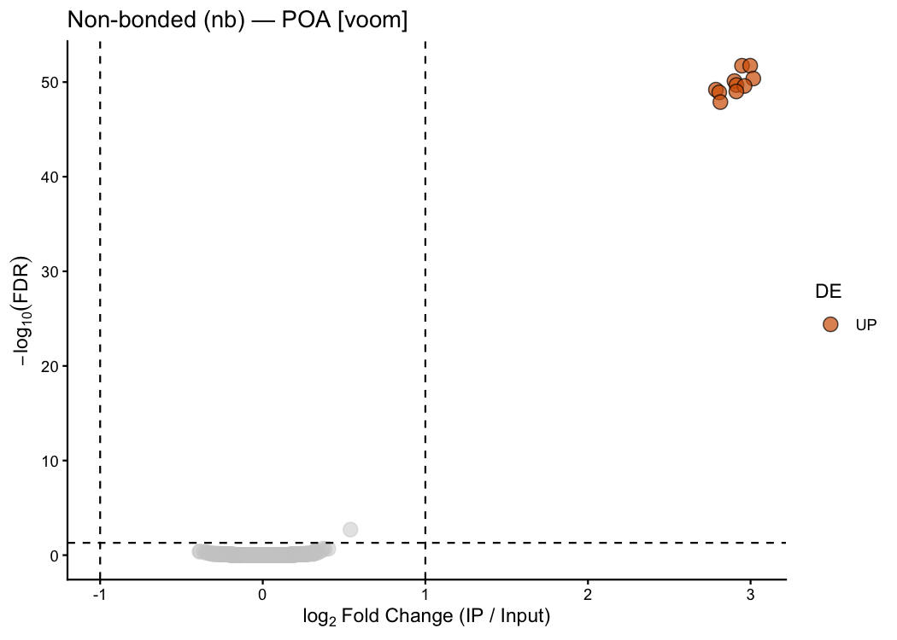
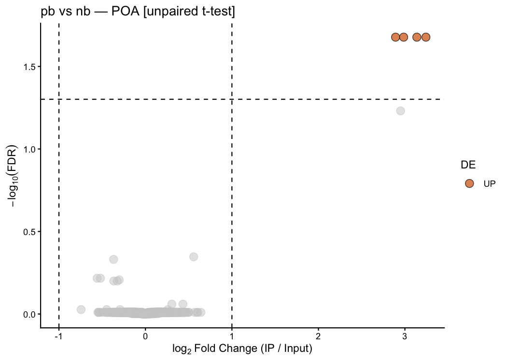

pTRAPPING is an R package that provides a streamlined, reproducible workflow for analysing TRAP-seq and PhosphoTRAP RNA-sequencing data. It wraps the statistical power of edgeR and limma behind a compact set of purpose-built functions that take you from a raw counts matrix to publication-ready tables and figures in just a few lines of code.
What is TRAP-seq? Translating Ribosome Affinity Purification followed by sequencing (TRAP-seq) captures mRNAs that are actively translated in a specific cell type, tagged by a transgenic ribosomal subunit. The key comparison is between the IP fraction (immunoprecipitated, actively translated transcripts) and the INPUT fraction (total RNA — all transcripts). Genes significantly enriched in IP relative to INPUT are translated in the tagged cell type.
PhosphoTRAP adds an activity-marking phosphorylation step, so only recently activated neurons are captured — combining cell-type specificity with behavioural state information in a single experiment.
Functions at a glance
| Function | What it does |
|---|---|
ptrap_de() |
IP vs INPUT DE analysis for TRAP-seq (edgeR LRT/QLF, limma-voom, or t-test) |
ptrap_volcano() |
Volcano plot from a single ptrap_de() result |
ptrap_volcano2() |
Dual scatter comparing two treatment conditions side by side |
Simulated dataset
Throughout this README we simulate a mouse TRAP-seq experiment studying pair-bonding in the preoptic area (POA) of the hypothalamus — a brain region well-known for its role in social behaviour.
Mice are divided into two groups:
-
nb– non-bonded control mice -
pb– pair-bonded mice (48 h co-housing with a partner)
Each group has 3 animals (biological replicates). Each animal contributes one IP and one INPUT library, giving 12 samples total. The column-naming convention <treatment><replicate><fraction> (e.g. nb1INPUT, pb2IP) lets ptrap_de() parse sample metadata automatically — no sample_df needed.
library(pTRAPPING)
library(ggplot2)
set.seed(42)
n_genes <- 2000
gene_ids <- paste0("Gene", seq_len(n_genes))
# ── Replace early positions with real mouse gene names ──────────────────────
# Neuronal markers — expected to be enriched in IP in BOTH groups
neuronal <- c("Snap25", "Rbfox3", "Camk2a", "Vglut1", "Syn1",
"Map2", "Nrgn", "Bdnf", "Pvalb", "Sst")
# Pair-bonding markers — enriched in IP only in pb
pb_markers <- c("Oxtr", "Avpr1a", "Fos", "Arc", "Egr1")
# Glial markers — NOT enriched in neuronal IP (control transcripts)
glial <- c("Gfap", "Aldh1l1", "S100b", "Cx3cr1", "Tmem119")
gene_ids[seq_along(neuronal)] <- neuronal
gene_ids[length(neuronal) + seq_along(pb_markers)] <- pb_markers
gene_ids[length(neuronal) + length(pb_markers) + seq_along(glial)] <- glial
# ── True IP / INPUT enrichment ratios ───────────────────────────────────────
base_enrich <- rep(1.0, n_genes)
base_enrich[1:10] <- 8 # neuronal markers — constitutively enriched in both groups
base_enrich[11:15] <- 1 # pair-bonding markers — baseline (no enrichment in nb)
pb_extra <- rep(1.0, n_genes)
pb_extra[11:15] <- 8 # pair-bonding markers strongly enriched only in pb
# ── Helper: simulate one IP/INPUT pair for all genes ────────────────────────
sim_pair <- function(enrich, mu = 200, size = 10, sd_noise = 0.15) {
input <- rnbinom(n_genes, mu = mu, size = size)
ip <- pmax(round(input * enrich * exp(rnorm(n_genes, 0, sd_noise))), 0L)
list(input = input, ip = ip)
}
# ── Build counts data frame with auto-parseable column names ────────────────
cols <- lapply(1:3, function(i) {
nb <- sim_pair(base_enrich)
pb <- sim_pair(base_enrich * pb_extra)
setNames(
data.frame(nb$input, nb$ip, pb$input, pb$ip),
c(paste0("nb", i, "INPUT"), paste0("nb", i, "IP"),
paste0("pb", i, "INPUT"), paste0("pb", i, "IP"))
)
})
counts_mat <- data.frame(Gene = gene_ids, do.call(cbind, cols))
# Preview — neuronal marker, pair-bonding marker, glial marker
counts_mat[c(1, 11, 16), 1:7]
#> Gene nb1INPUT nb1IP pb1INPUT pb1IP nb2INPUT nb2IP
#> 1 Snap25 274 2231 150 910 229 1467
#> 11 Oxtr 217 260 83 630 290 333
#> 16 Gfap 151 117 143 123 222 307The first column holds gene identifiers; the remaining 12 columns are raw counts. Snap25 (neuronal) already shows high IP counts in both groups, while Oxtr (pair-bonding marker) shows balanced IP/INPUT — it will only be enriched in pb.
ptrap_de() — differential expression
Simplest call: auto-parse column names
When sample_df is omitted, ptrap_de() reads treatment, replicate number, and fraction directly from the column names. Providing treatment_name tells the function which group to analyse: 1
res_nb <- ptrap_de(
counts_mat = counts_mat,
treatment_name = "nb",
test_method = "LRT" # edgeR likelihood ratio test
)
#> Auto-parsed sample metadata from column names.
#> Treatments : nb, pb
#> Blocks : 1, 2, 3
#> Fractions : INPUT, IP
# Top enriched genes in nb
head(res_nb[res_nb$diffexpressed != "NO",
c("Gene", "logFC", "LR", "PValue", "FDR", "diffexpressed")])
#> # A tibble: 6 × 6
#> Gene logFC LR PValue FDR diffexpressed
#> <chr> <dbl> <dbl> <dbl> <dbl> <chr>
#> 1 Sst 2.95 695. 3.27e-153 6.54e-150 UP
#> 2 Syn1 3.00 693. 1.10e-152 1.10e-149 UP
#> 3 Snap25 2.90 656. 1.40e-144 9.31e-142 UP
#> 4 Vglut1 3.01 631. 3.12e-139 1.56e-136 UP
#> 5 Bdnf 2.92 624. 1.13e-137 4.50e-135 UP
#> 6 Rbfox3 2.79 616. 5.50e-136 1.83e-133 UP
res_pb <- ptrap_de(
counts_mat = counts_mat,
treatment_name = "pb",
test_method = "LRT"
)
#> Auto-parsed sample metadata from column names.
#> Treatments : nb, pb
#> Blocks : 1, 2, 3
#> Fractions : INPUT, IP
# Top enriched genes in pb
head(res_pb[res_pb$diffexpressed != "NO",
c("Gene", "logFC", "LR", "PValue", "FDR", "diffexpressed")])
#> # A tibble: 6 × 6
#> Gene logFC LR PValue FDR diffexpressed
#> <chr> <dbl> <dbl> <dbl> <dbl> <chr>
#> 1 Egr1 3.23 629. 6.88e-139 1.38e-135 UP
#> 2 Map2 3.12 600. 1.63e-132 1.63e-129 UP
#> 3 Arc 3.13 591. 1.60e-130 1.07e-127 UP
#> 4 Syn1 2.98 550. 1.36e-121 6.78e-119 UP
#> 5 Sst 2.94 543. 4.18e-120 1.67e-117 UP
#> 6 Nrgn 2.99 542. 5.61e-120 1.87e-117 UPThe neuronal markers (Snap25, Camk2a, etc.) are enriched in IP in both groups. The pair-bonding markers (Oxtr, Avpr1a, Fos, Arc, Egr1) only appear in the pb result — exactly as expected for activity-dependent transcripts of pair-bonded neurons.
Choosing the right test_method
| Method | When to use |
|---|---|
"LRT" |
edgeR likelihood ratio test — robust with ≥ 4 replicates |
"QLF" |
edgeR quasi-likelihood F-test — more conservative, better FDR control |
"voom" |
limma-voom — precision weights on log-CPM; useful when library sizes vary |
"paired.ttest" |
Per-gene paired t-test on IP − INPUT differences (Tan et al. 2016) — a single treatment vs INPUT |
"unpaired.ttest" |
Per-gene Welch t-test comparing log₂(FE) between two treatment groups (Knight et al.) |
# Quasi-likelihood F-test — more conservative than LRT
res_qlf <- ptrap_de(
counts_mat = counts_mat,
treatment_name = "nb",
test_method = "QLF"
)
# limma-voom — accounts for mean-variance trend with precision weights
res_voom <- ptrap_de(
counts_mat = counts_mat,
treatment_name = "nb",
test_method = "voom"
)
# Paired t-test — recommended for real PhosphoTRAP data with n = 3 animals
# Follows the approach in Tan et al. 2016 (Cell 167, 47-59)
res_pt <- ptrap_de(
counts_mat = counts_mat,
treatment_name = "nb",
test_method = "paired.ttest"
)Note on
"paired.ttest": The GLM-based methods ("LRT"/"QLF") estimate gene-wise dispersion from the data and work best with ≥ 4 replicates. With only n = 3, dispersion estimates are unreliable. The paired t-test follows Tan et al. (2016) exactly: “p value for each gene was calculated as the paired t test between input and immunoprecipitated RPKM values from the three experimental repeats.” Setnorm.method = "RPKM"(and supplygene.length) to reproduce the original analysis.logFCis log₂(mean_IP / mean_INPUT).
Long-format paired data with return_long = TRUE
return_long = TRUE (only with "paired.ttest") returns the per-gene, per-animal paired table used internally — useful for plotting individual data points or performing additional quality checks:
res_long <- ptrap_de(
counts_mat = counts_mat,
treatment_name = "nb",
test_method = "paired.ttest",
return_long = TRUE
)
#> Auto-parsed sample metadata from column names.
#> Treatments : nb, pb
#> Blocks : 1, 2, 3
#> Fractions : INPUT, IP
# DE results tibble
head(res_long$results[, c("Gene", "logFC", "t_statistic", "PValue", "FDR")])
#> # A tibble: 6 × 5
#> Gene logFC t_statistic PValue FDR
#> <chr> <dbl> <dbl> <dbl> <dbl>
#> 1 Gene1833 0.142 251. 0.0000159 0.0317
#> 2 Pvalb 2.91 38.6 0.000670 0.504
#> 3 Gene68 0.125 36.4 0.000755 0.504
#> 4 Gene51 0.132 25.1 0.00158 0.653
#> 5 Gene1017 -0.118 -23.4 0.00182 0.653
#> 6 Gene1529 0.196 22.6 0.00196 0.653
# Per-gene, per-animal paired table (showing Snap25):
# ip_count / input_count are in the norm.method scale; FE = IP/INPUT per animal
res_long$long_data[res_long$long_data$Gene == "Snap25", ]
#> # A tibble: 3 × 5
#> Gene block ip_count input_count FE
#> <chr> <chr> <dbl> <dbl> <dbl>
#> 1 Snap25 1 5522. 679. 8.12
#> 2 Snap25 2 3580. 556. 6.43
#> 3 Snap25 3 3462. 440. 7.86Custom thresholds
Adjust lfc_threshold and fdr_threshold to control how strict the DE classification is:
# Relaxed: any enrichment above 0.5 log2FC at FDR < 0.10
res_relaxed <- ptrap_de(
counts_mat = counts_mat,
treatment_name = "pb",
test_method = "LRT",
lfc_threshold = 0.5,
fdr_threshold = 0.10
)
#> Auto-parsed sample metadata from column names.
#> Treatments : nb, pb
#> Blocks : 1, 2, 3
#> Fractions : INPUT, IP
table(res_relaxed$diffexpressed)
#>
#> NO UP
#> 1984 16HTML table with kable.out = TRUE
Set kable.out = TRUE to get a formatted HTML table of top genes — ideal for Quarto / R Markdown reports:
ptrap_de(
counts_mat = counts_mat,
treatment_name = "pb",
test_method = "LRT",
kable.out = TRUE,
ngenes.out = 10
)
ptrap_volcano() — single volcano plot
A classic volcano plot for one treatment condition, with significant genes colour-coded and labelled:
ptrap_volcano(
res_nb,
title = "Non-bonded (nb) — POA"
)
Customise colours and thresholds:
ptrap_volcano(
res_pb,
lfc_threshold = 1,
fdr_threshold = 0.05,
colors = c("UP" = "#E69F00", "DOWN" = "#56B4E9"),
title = "Pair-bonded (pb) — POA"
)
Oxtr, Avpr1a, Fos, Arc, and Egr1 appear only in the pb plot — consistent with their known roles in pair-bond formation and neuronal immediate-early gene expression.
ptrap_volcano2() — dual scatter comparing two treatments
ptrap_volcano2() overlays both treatment conditions on a single scatter plot. Each axis shows the log₂ fold-change (IP / INPUT) for one group, and genes are colour-coded by their DE status across conditions:
ptrap_volcano2(
res_nb, res_pb,
treatment_col = "Treatment",
title = "POA — nb vs pb"
)
How to read this plot * Top-right quadrant: enriched in IP in both groups → constitutive neuronal translation (e.g. Snap25, Camk2a, Rbfox3). * Bottom-right: enriched only in pb → activity-dependent translation in pair-bonded animals (Oxtr, Fos, Arc, Egr1, Avpr1a). * Top-left: enriched only in nb → non-bonded-specific. * The dotted diagonal is the identity line — equal enrichment in both groups.
Customise colours and thresholds:
ptrap_volcano2(
res_nb, res_pb,
lfc_threshold = 1,
fdr_threshold = 0.05,
treatment_col = "Treatment",
title = "POA — nb vs pb",
colors = c(
"DE in both" = "#D55E00",
"DE only nb" = "#0072B2",
"DE only pb" = "#009E73"
)
)
test_method = "voom" — limma-voom
"voom" applies the limma-voom pipeline: counts are converted to log-CPM and precision weights are estimated from the mean-variance trend before fitting the same IP vs INPUT linear model. This is particularly useful when library sizes vary substantially across samples, as the weights down-weight unreliable observations automatically.
res_nb_voom <- ptrap_de(
counts_mat = counts_mat,
treatment_name = "nb",
test_method = "voom"
)
#> Auto-parsed sample metadata from column names.
#> Treatments : nb, pb
#> Blocks : 1, 2, 3
#> Fractions : INPUT, IP
# Top enriched genes
head(res_nb_voom[res_nb_voom$diffexpressed != "NO",
c("Gene", "logFC", "t", "PValue", "FDR", "diffexpressed")])
#> # A tibble: 6 × 6
#> Gene logFC t PValue FDR diffexpressed
#> <chr> <dbl> <dbl> <dbl> <dbl> <chr>
#> 1 Sst 2.95 28.9 1.31e-55 1.85e-52 UP
#> 2 Syn1 3.00 28.8 1.85e-55 1.85e-52 UP
#> 3 Vglut1 3.02 27.8 6.39e-54 4.26e-51 UP
#> 4 Snap25 2.90 27.6 1.57e-53 7.84e-51 UP
#> 5 Bdnf 2.91 27.2 5.11e-53 2.04e-50 UP
#> 6 Map2 2.96 27.1 7.69e-53 2.56e-50 UPThe output has the same structure as "LRT" / "QLF" results (Gene, logFC, FDR, diffexpressed, …), so it drops straight into ptrap_volcano():
ptrap_volcano(
res_nb_voom,
title = "Non-bonded (nb) — POA [voom]"
)
test_method = "unpaired.ttest" — comparing two treatment groups
The unpaired t-test method follows the PhosphoTRAP approach of Knight et al. (2012): per-gene fold enrichments (FE = IP / INPUT) are computed for every animal in each group, and a Welch t-test is used to compare log₂(FE) between the two treatment groups. This is the right choice when you want to ask:
“Is the IP enrichment itself different between group A and group B?”
rather than testing IP vs INPUT within a single group. When neither treatment_name nor control_name is supplied and the counts matrix contains exactly two groups, they are assigned automatically (alphabetically; first = control, second = treatment):
# Auto-assigns: nb = control, pb = treatment
res_unpaired <- ptrap_de(
counts_mat = counts_mat,
test_method = "unpaired.ttest"
)
#> Auto-parsed sample metadata from column names.
#> Treatments : nb, pb
#> Blocks : 1, 2, 3
#> Fractions : INPUT, IP
#> Auto-assigned treatments alphabetically: control = 'nb', treatment = 'pb'.
#> Low-power warning ('unpaired.ttest'): 'pb' has n = 3 and 'nb' has n = 3 replicates.
#> A Welch t-test with 3 replicates per group yields only 2 degree(s) of freedom per group,
#> making BH correction over 2000 genes highly conservative -- few or no genes may reach
#> significance at the default thresholds. Consider:
#> * relaxing fdr_threshold (e.g. 0.10 or 0.20) or lfc_threshold;
#> * increasing biological replicates (n >= 4 recommended);
#> * using test_method = 'LRT', 'QLF', 'voom', or 'deseq', which
#> borrow information across genes to improve power at small n.
# Results include mean FE per group and their ratio (diff_FE)
head(res_unpaired[res_unpaired$diffexpressed != "NO",
c("Gene", "logFC", "diff_FE",
"mean_FE_nb", "mean_FE_pb",
"PValue", "FDR", "diffexpressed")])
#> # A tibble: 4 × 8
#> Gene logFC diff_FE mean_FE_nb mean_FE_pb PValue FDR diffexpressed
#> <chr> <dbl> <dbl> <dbl> <dbl> <dbl> <dbl> <chr>
#> 1 Egr1 3.24 9.47 1.00 9.48 0.0000166 0.0210 UP
#> 2 Oxtr 2.89 7.42 1.12 8.28 0.0000287 0.0210 UP
#> 3 Arc 3.14 8.80 0.997 8.78 0.0000408 0.0210 UP
#> 4 Fos 2.99 7.92 1.03 8.13 0.0000420 0.0210 UPInterpretation:
diff_FE = mean_FE_pb / mean_FE_nb— the ratio of mean IP/INPUT fold enrichments between treatment and control.logFCislog2(diff_FE). Genes withlogFC > 0are more enriched in the pair-bonded group.
Pair-bonding markers (Oxtr, Avpr1a, Fos, Arc, Egr1) should show up here as genes whose neuronal IP enrichment is higher in pb than nb:
ptrap_volcano(
res_unpaired,
title = "pb vs nb — POA [unpaired t-test]"
)
Providing sample metadata explicitly
For more complex designs — multiple brain regions, custom blocking variables, or non-standard column naming — supply sample_df directly:
# Example: two brain regions, two treatments
sample_df <- data.frame(
sample = c("POA_nb1_IP", "POA_nb1_INPUT", "POA_pb1_IP", "POA_pb1_INPUT",
"AMY_nb1_IP", "AMY_nb1_INPUT", "AMY_pb1_IP", "AMY_pb1_INPUT"),
region = rep(c("POA", "AMY"), each = 4),
treatment = rep(c("nb", "nb", "pb", "pb"), 2),
block = rep("1", 8),
fraction = rep(c("IP", "INPUT", "IP", "INPUT"), 2)
)
res_poa_pb <- ptrap_de(
counts_mat = my_counts,
sample_df = sample_df,
gene_ids = my_gene_ids,
region_name = "POA",
treatment_name = "pb",
region_col = "region",
treatment_col = "treatment",
block_col = "block",
fraction_col = "fraction",
test_method = "paired.ttest"
)Citation
If you use pTRAPPING in your research, please cite:
Rodríguez, C. (2024). pTRAPPING: A Suite of Functions for the Analyses of PhosphoTRAP Data in R. https://github.com/laurenoconnelllab/pTRAPPING
For the paired t-test method (test_method = "paired.ttest"):
Tan, C.L., Cooke, E.K., Leib, D.E., Lin, Y.C., Daly, G.E., Zimmerman, C.A., and Knight, Z.A. (2016). Warm-Sensitive Neurons that Control Body Temperature. Cell 167, 47–59. https://doi.org/10.1016/j.cell.2016.08.028
For the unpaired t-test method (test_method = "unpaired.ttest"):
Knight, Z.A., Tan, K., Birsoy, K., Schmidt, S., Garrison, J.L., Wysocki, R.W., Emiliano, A., Ekstrand, M.I., and Bhatt, D.L. (2012). Molecular profiling of activated neurons by phosphorylated ribosome capture. Cell 151, 1126–1137. https://doi.org/10.1016/j.cell.2012.10.039